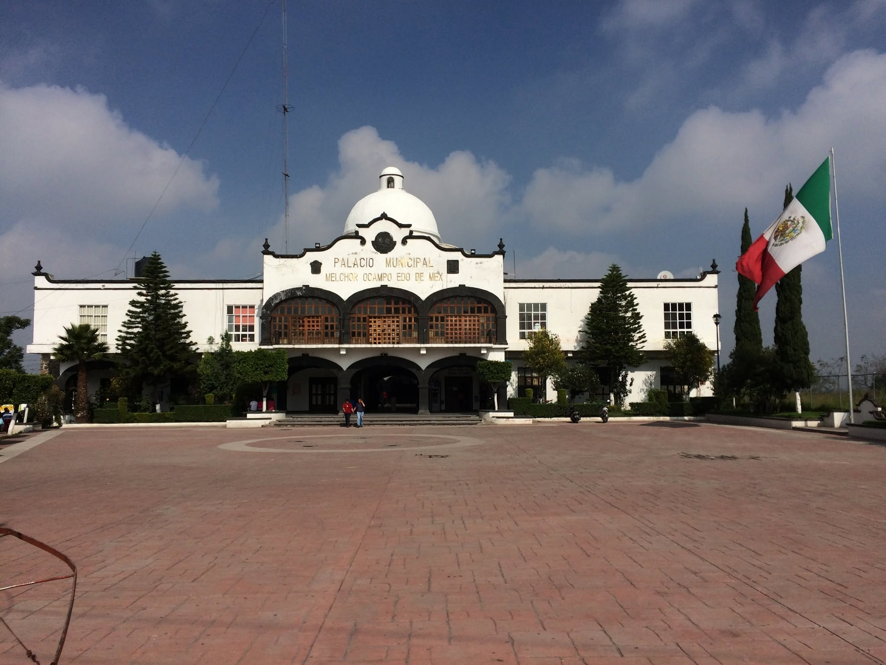
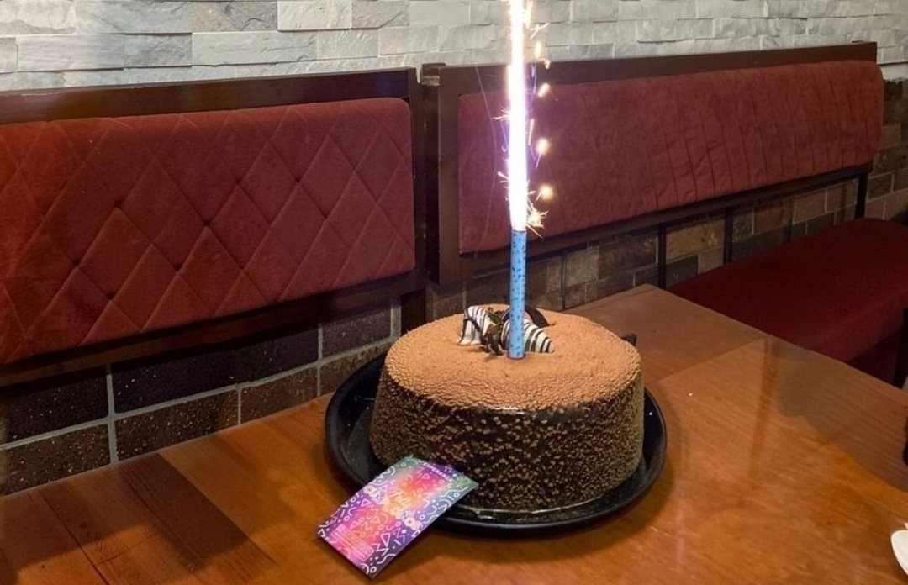

A pesar de las limitaciones económicas, nunca dejé de estudiar ni de trabajar.
Licenciado en Derecho por la Facultad de Derecho de la UNAM (Ciudad Universitaria).
A los 18 años fui auxiliar administrativo en el Ayuntamiento de Melchor Ocampo, mientras manejaba un taxi en las madrugadas y noches para costear mis estudios.

A los 20 años inicie un pequeño negocio de crepería y cafetería, que sostuve y desarrolle durante ocho años, generando empleo para vecinos del municipio.

Mi formación académica continuó con estudios de posgrado que fortalecen mi visión y capacidad de servicio.